专题01 丰富的图形世界的七种模型

目录
题型一：从不同方向看几何体 1
题型二：平面图形旋转后所得的立体图形 4
题型三：正方体的展开图 6
题型四：点、线、面、体四者之间的关系 9
题型五：画从不同方向看几何体并求小立方块的数量 10
题型六：由展开图求几何体的表面积和体积 14
题型七：平面图形旋转后所得的立体图形并求体积 19

题型一：从不同方向看几何体
1．篆刻是中华传统艺术之一，雕刻印章是篆刻基本功左图是一块雕刻印章的材料，从左面看到的平面图形为（ ）

A．
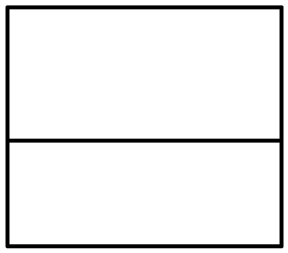
B．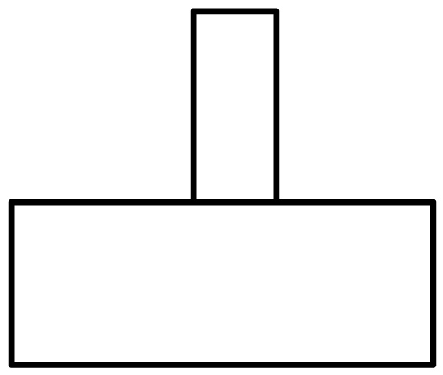
C． D．
D．
【答案】A
【分析】本题考查从不同角度观察图形．画出从左边看到的图形即可求解．
【详解】解：从左面看到的平面图形为
故选：A
2．由五个大小相同的正方体搭成的几何体如图所示，从上面看这个几何体得到的平面图形是（ ）．
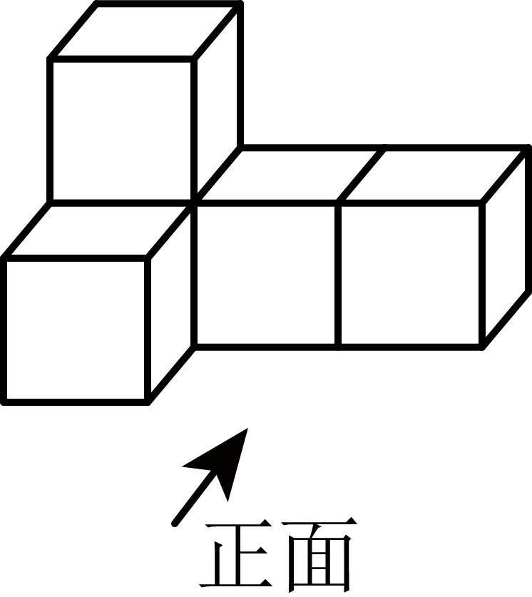
A． B．
B．
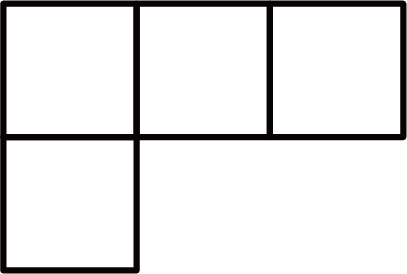
C． D．
D．
【答案】B
【分析】本题主要考查了从不同方向看几何体，解题关键是掌握从上面看得到的图形的特征．从上面看有2行，上面一行有3个正方形，下面一行最左侧有1个正方形，据此判断即可．
【详解】
解：从上面看这个几何体得到的平面图形是，
故选：B．
3．如图，一个圆柱体切去一部分，则从上面看到的图形是（ ）
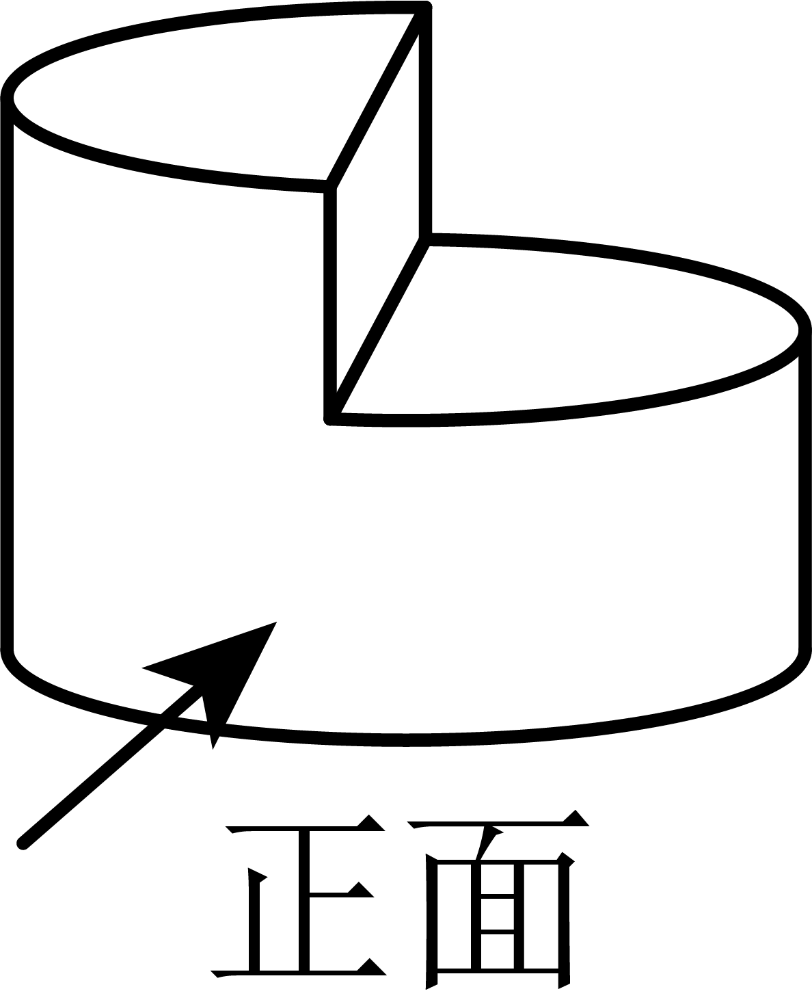
A． B．
B． C．
C． D．
D．
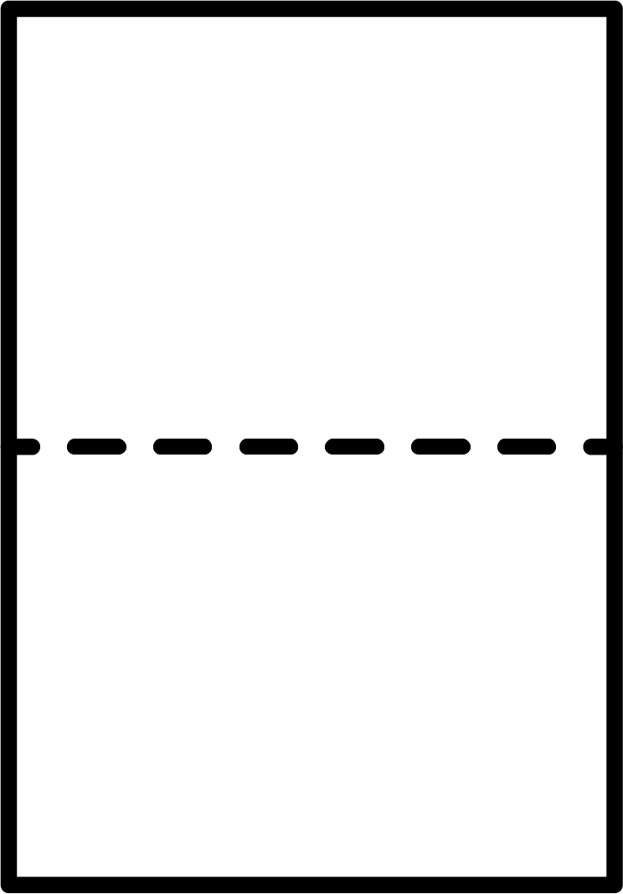
【答案】B
【分析】ｇｃ
本题主要考查了从三个方向看几何体．熟练掌握从三个方向看到的形状图是解题的关键．根据从上面看到的形状图判断即得．
【详解】
解：A. ，是从正面看到的图形；
B. ，是从上面看到的图形；
C. ，不是这个切去一部分的圆柱体从各个方面看到的图形；
D. ，是从左面看到的图形．
故选：B．
4．如图是由三个相同的小立方块组成的几何体，该几何体从左面看到的形状图是（ ）
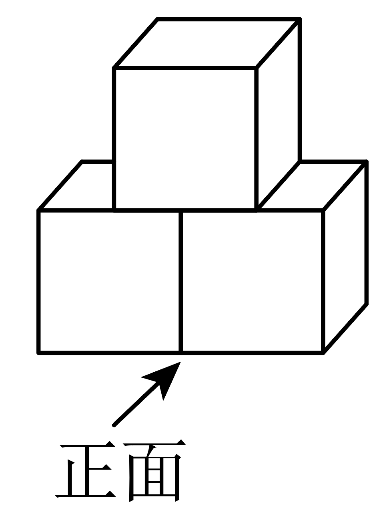
A． B．
B．
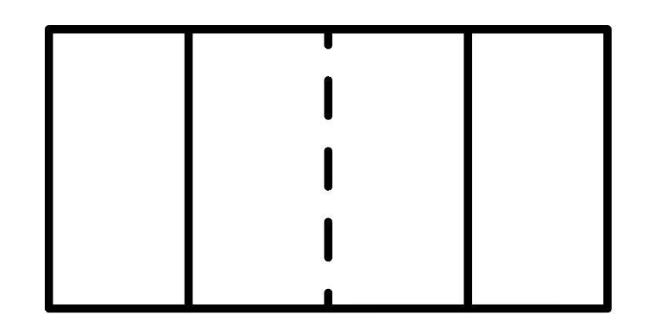
C． D．
D．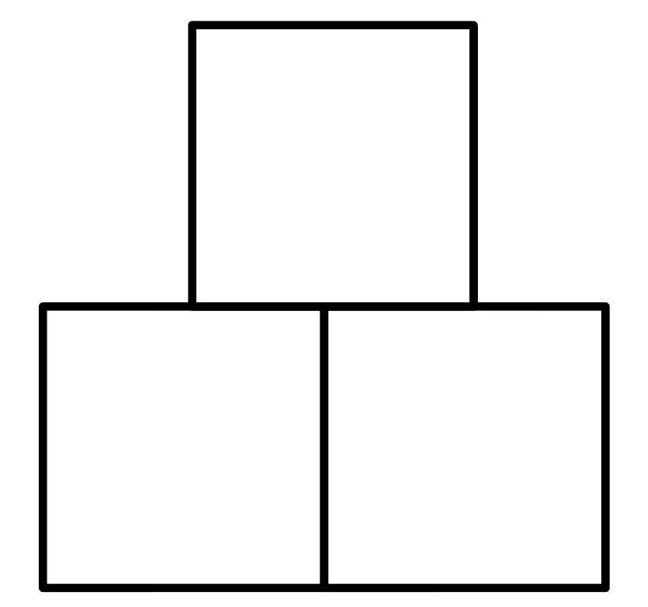
【答案】C
【分析】本题考查的是从不同方向看几何体，值得注意的是能看到的立体图形中的线条都要画成实线，看不到的画成虚线. 根据从左边看立体图形，看到的平面图形可得答案.
【详解】解：该几何体从左面看到的形状图有1列，看到2个正方形，
所以形状图是：
，
故选：C
5．2024年12月11日至15日世界羽联世界巡回赛总决赛在我国浙江省杭州市杭州奥体中心体育馆举行，图①是颁奖现场．图②是领奖台的示意图，则此领奖台从上面看，得到的平面图形是（ ）

A． B．
B．
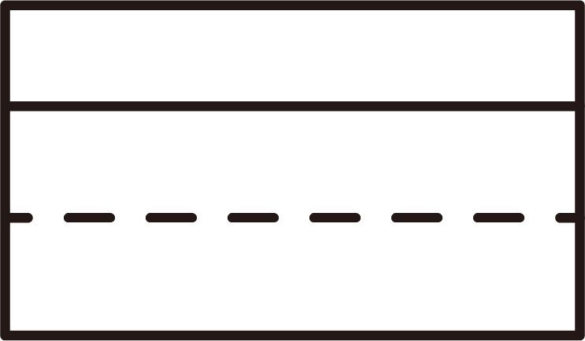
C． D．
D．
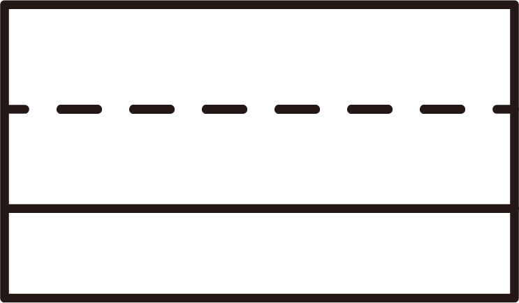
【答案】C
【分析】本题考查从不同方向看几何体，根据从上面看到的形状图即可求解．
【详解】解：此领奖台从上面看，得到的平面图形是
，
故选：C．
题型二：平面图形旋转后所得的立体图形
6．如图，将直角三角形绕它的一条直角边所在直线旋转一周后形成的几何体是（ ）

A． B．
B．
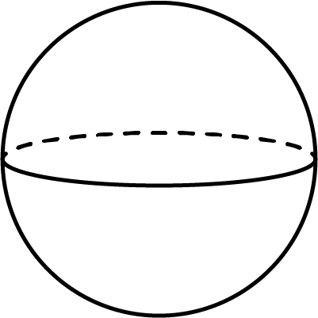
C．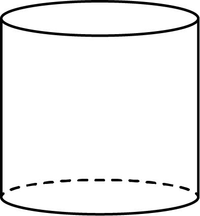
D．
【答案】A
【分析】根据几何体形成的基本原理解答即可．
本题考查了几何体的生成，熟练掌握原理是解题的关键．
【详解】解：根据题意，得将直角三角形绕它的一条直角边所在直线旋转一周后形成的几何体是圆锥，
故选：A．
7．陶瓷器具是我国古代劳动人民的重要发明之一，是中国人民勤劳与智慧的结晶．如图所示，将给定的图形绕虚线旋转一周得到的几何体与下列陶瓷花瓶最为类似的是（ ）
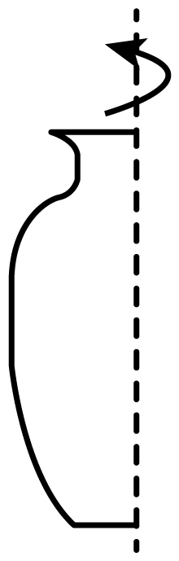
A．
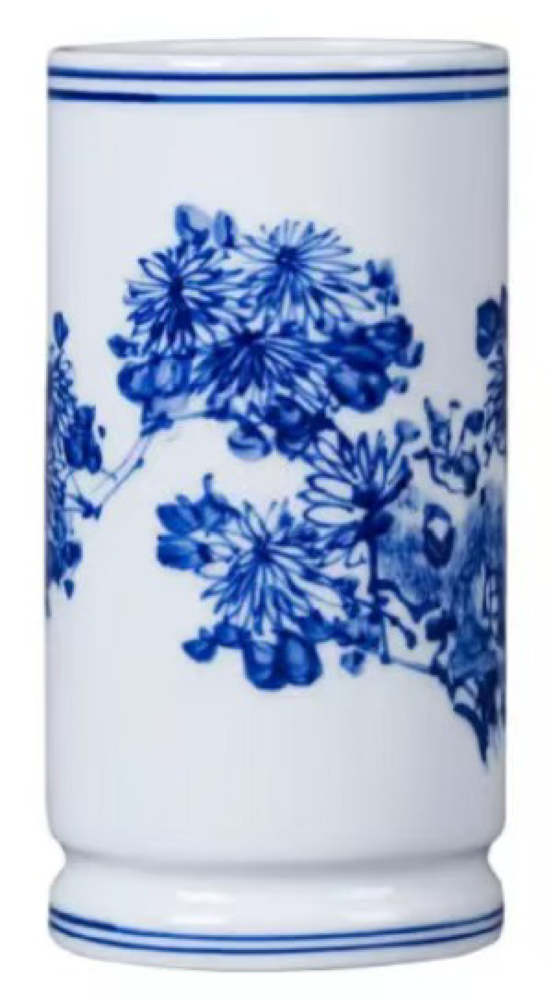
B．
C． D．
D．
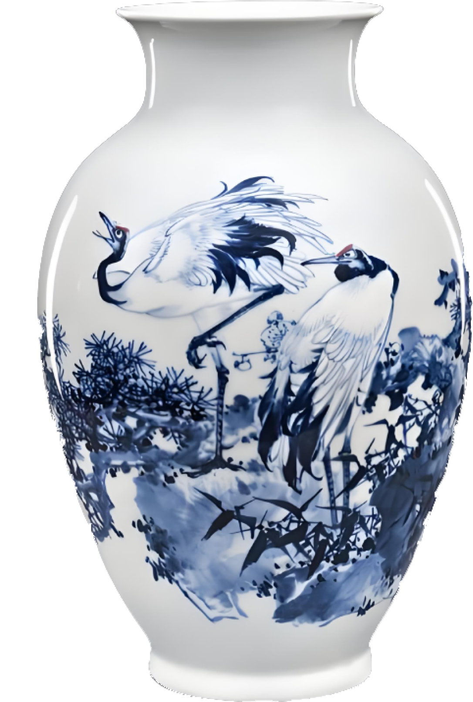
【答案】D
【分析】本题主要考查了面动成体，解题关键在于能够通过几何直观得出选项．通过丰富的空间想象力类比选项中各花瓶的外表即可得出答案．
【详解】解：将所给图形绕直线旋转一周后的几何体与D选项的花瓶外表最为相似，
故选：D．
8．如图，在矩形 中，
中，
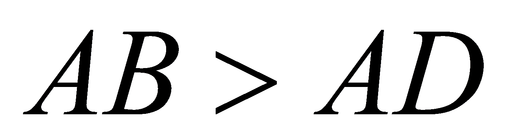
，将该矩形绕直线 旋转一周可得到的立体图形是（ ）
旋转一周可得到的立体图形是（ ）
A． B． C． D．
D．
【答案】B
【分析】本题考查了点、线、面、体，熟练掌握面动成体得到的几何体的形状是解题的关键．根据矩形绕一边旋转一周得到圆柱体解答．
【详解】解： 四边形是矩形，，
四边形是矩形，，
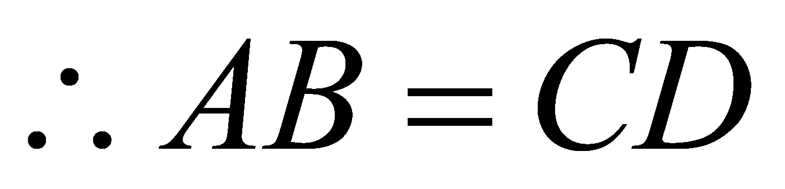
，是长边．则该矩形绕直线旋转一周可得到的立体图形是较高的圆柱体．
故选：B．
9．如图，将矩形绕边 所在的直线旋转一周，得到的几何体是（ ）
所在的直线旋转一周，得到的几何体是（ ）
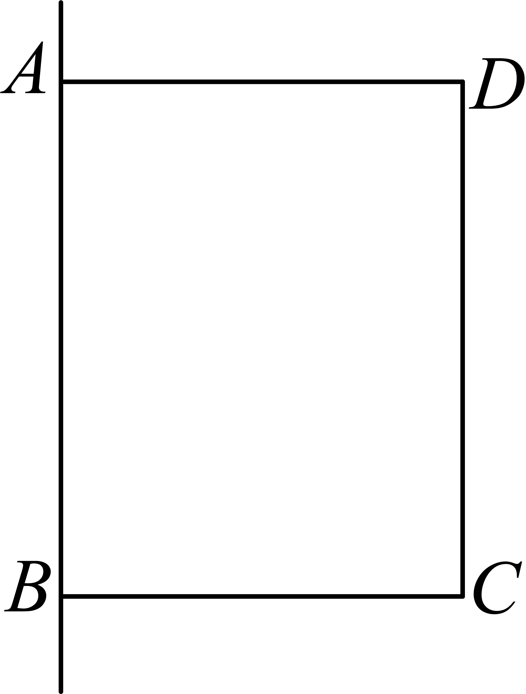
A．圆锥 B．圆柱 C．球 D．长方体
【答案】B
【分析】本题主要考查了旋转体的定义和常见的几何体，掌握常见的几何体是解题的关键．
根据旋转体的定义和几何体的侧面展开图即可得出答案．
【详解】解：将矩形绕边所在的直线旋转一周，得到的几何体是圆柱．
故选：B
10．如图，将该平面图形绕图中的虚线（轴线）旋转一周，得到的立体图形是（ ）

A．
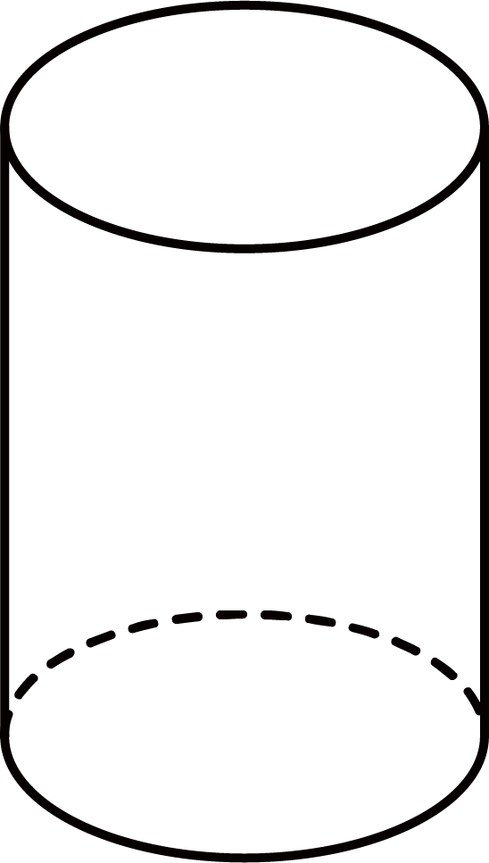
B． C．
C． D．
D．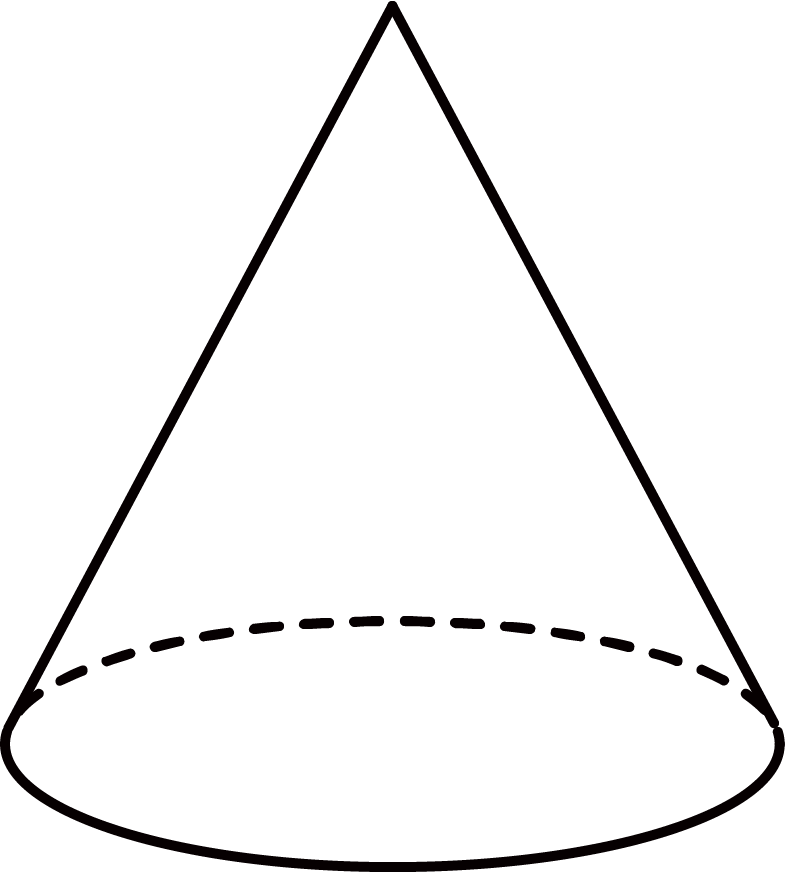
【答案】B
【分析】本题考查了图形的旋转，记住常见平面图形旋转得到的几何体是解题的关键．
根据旋转的性质判定即可．
【详解】
解：绕图中的虚线（轴线）旋转一周，得到的立体图形是
故选：B．
题型三：正方体的展开图
11．如图①是一个小正方体的侧面展开图，小正方体从如图②所示的位置依次翻到第1格、第2格、第3格、第4格、第5格，这时小正方体朝上面的字是（ ）

A．路 B．兴 C．复 D．中
【答案】A
【分析】本题考查了正方体的展开图，用空间想象去解决正方体的滚动是解题的关键．
先由图1分析出：“国”和“兴”是对面，“梦”和“中”是对面，“复”和“路”是对面，再由图2结合空间想象得出答案．
【详解】解：由图1可知：“国”和“兴”是对面，“梦”和“中”是对面，“复”和“路”是对面，再由图2可知，1、2、3、4、5分别对应的面是“兴”、“梦”、“路”、“国”、“复”，所以第5格朝上的字是“路”．
故选A．
12．“非学无以广才”出自诸葛亮《诫子书》，其大意为：不学习就无从增长知识，提高才干．一个正方体的六个面上分别写有汉字“非”“学”“无”“以”“广”“才”，其展开图如图所示，则与“非”字相对面上的汉字为（ ）
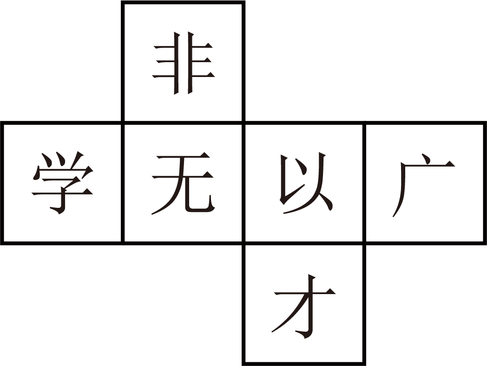
A．学 B．广 C．才 D．以
【答案】C
【分析】本题主要考查正方体的展开图的性质，掌握正方体展开图的性质是解题关键；根据正方体的表面展开图，相对的面之间相隔一个正方形，根据这一特点即可求解．
【详解】解：与“非”字相对面上的汉字为“才”，
故选：C．
13．下列图形不是正方体纸盒平面展开图的是（ ）
A． B．
B．
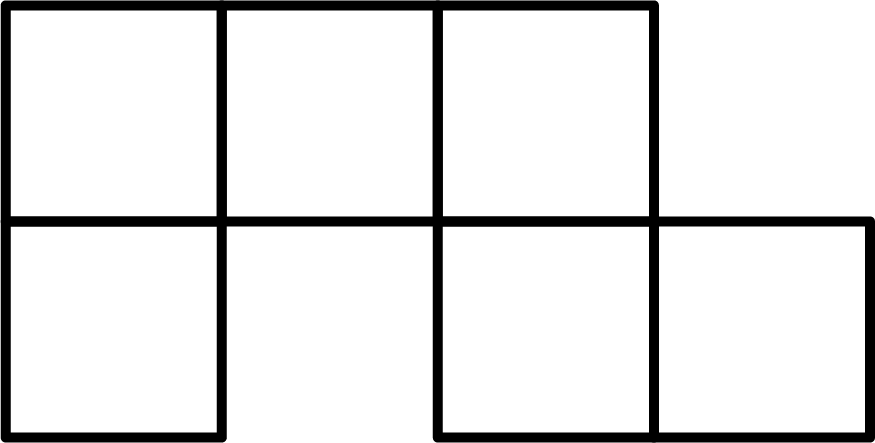
C． D．
D．
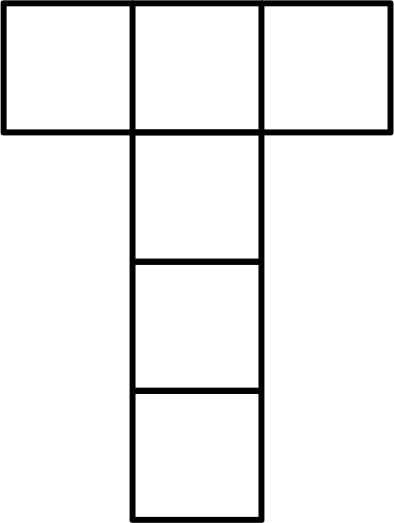
【答案】B
【分析】本题考查几何体的展开图，解题的关键是根据正方体的特征，熟记正方体的11种展开图．根据只要有“田”，“凹”字格的展开图都不是正方体的表面展开图即可选择．
【详解】解：A．是正方体纸盒平面展开图，不符合题意；
B．不是正方体纸盒平面展开图，符合题意；
C．是正方体纸盒平面展开图，不符合题意；
D．是正方体纸盒平面展开图，不符合题意．
故选B．
14．如图，正方体的六个面上有三个面有图案，它的展开图可能是（ ）

A． B．
B．
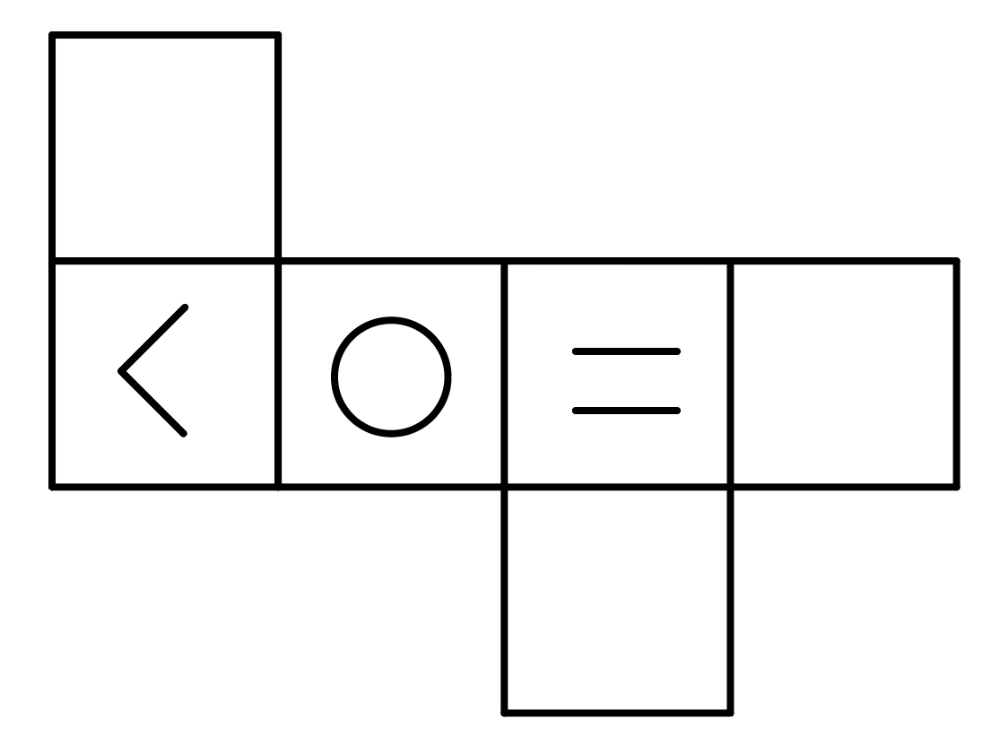
C．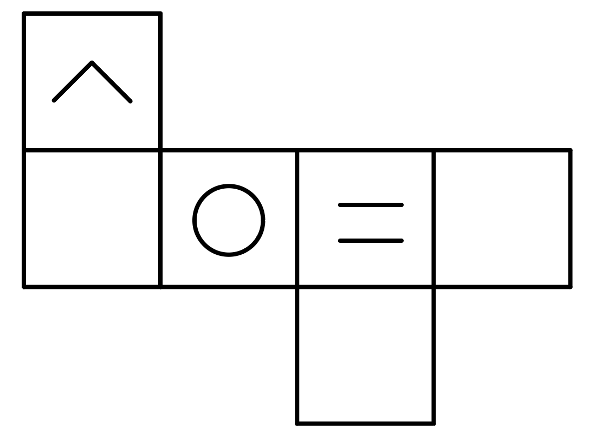
D．
【答案】A
【分析】本题考查几何体的展开图，掌握正方体表面展开图的特征是正确解答的关键．
根据正方体表面展开图的特征进行判断即可．
【详解】解：由正方体可得，三个图案均是相邻的，
A、还原正方体后，符合题意；
B、<与＝是相对的两面，不符合题意；
C、还原正方体后，不等号的尖尖向右，不符合题意；
D、还原正方体后，<在下面，且不等号的尖尖朝前，不符合题意，
故选：A．
15．小丽制作了一个如图所示的正方体礼品盒，其对面图案都相同，那么这个正方体的平面展开图可能是（ ）
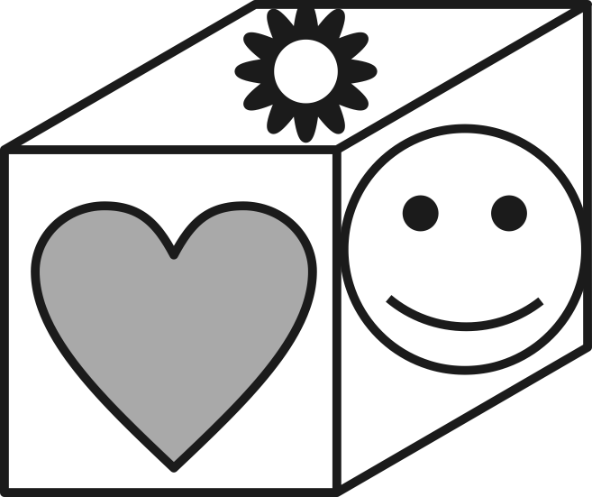
A． B．
B． C．
C． D．
D．
【答案】A
【分析】本题考查正方体的展开图，根据展开图中“相邻必不相对”分析求解，即可解题．
【详解】解：因为正方体礼品盒，其对面图案都相同，
根据展开图中“相邻必不相对”即可排除B、C、D，
故选：A．
题型四：点、线、面、体四者之间的关系
16．笔尖在纸上快速滑动写出了一个字母w，用数学知识解释为 ．
【答案】点动成线
【分析】本题考查了点、线、面、体的关系，熟练掌握点、线、面、体四者之间的关系是解题的关键．根据点动成线的性质即可解答．
【详解】解：笔尖在纸上快速滑动写出了一个字母w，用数学知识解释为“点动成线”．
故答案为：点动成线．
17．流星在天空划出一条线，用数学知识解释为点动成线，则直升机的螺旋桨高速旋转起来形成一个“圆面”，用数学知识解释为 ．
【答案】线动成面
【分析】本题考查点、线、面、体及其相互关系，掌握“点动成线，线动成面，面动成体”是关键．根据点、线、面、体及其相互关系“点动成线，线动成面，面动成体”进行判断即可．
【详解】解；直升机的螺旋桨高速旋转起来形成一个“圆面”，用数学知识解释为线动成面．
故答案为：线动成面．
18．画卷即为卷轴形的画，如图是一幅画卷展开的过程，这个过程体现的数学原理是 ．
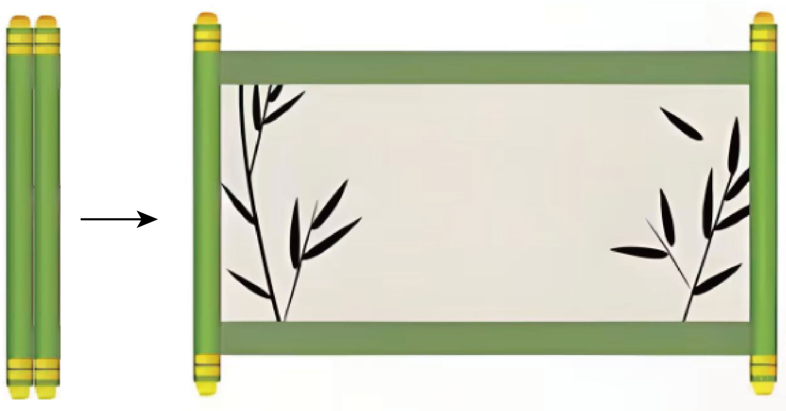
【答案】线动成面
【分析】本题考查了点、线、面、体的关系，熟练掌握点动成线、线动成面、面动成体是解答本题的关键．根据线动成面解答即可．
【详解】解：这个过程体现的数学原理是线动成面．
故答案为：线动成面．
19．向空中扔一块小石子，小石子经过的路线用数学知识解释为点动成线．中国扇文化有着深厚的文化底蕴，中国历来有“制扇王国”之称．如图，打开折扇时．随着扇骨的移动形成一个扇面，这种现象用数学知识解释为 ．

【答案】线动成面
【分析】本题考查了线、面的关系，根据题意，结合线动成面的数学原理：某一条线在运动过程中留下的运动轨迹会组成一个平面图形，这个平面图形就是一个面，即可得出答案．熟练掌握线动成面的数学原理是解本题的关键．
【详解】解：根据题意，这种现象可以用数学原理解释为：线动成面．
故答案为：线动成面．
20．彩色纸板做成的直角三角形小红旗如图所示，小红旗绕旗杆旋转一周后可以形成一个圆锥，这个现象说明 ．

【答案】面动成体
【分析】本题考查了点、线、面、体，直角三角形绕其一条直角边旋转一周后，得到几何体圆锥，这一现象说明面动成体．
【详解】解：直角三角形绕其一条直角边旋转一周后，得到几何体圆锥，这一现象说明面动成体，
故答案为：面动成体．
题型五：画从不同方向看几何体并求小立方块的数量
21．5个棱长为1的小正方形组成如图所示的几何体．
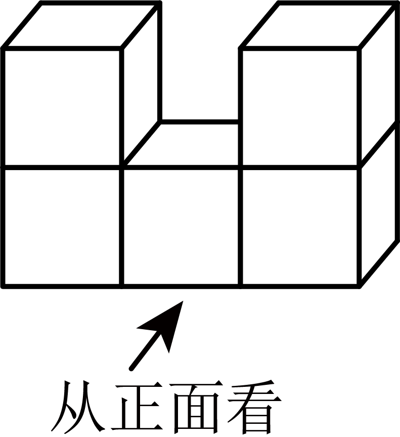
(1)该几何体的体积是 ______ 个立方单位，表面积是 _______ 个平方单位．
(2)画出该几何体从正面和左面看到的形状图．

【答案】(1)5，22
(2)见解析
【分析】本题考查了几何体的体积和从不同的方向看几何体；
（1）根据组合体的特征结合体积和表面积公式求解即可；
（2）根据从几何体的正面和左面看到的图形的形状画图即可．
【详解】（1）解：该几何体的体积是5个立方单位，表面积是
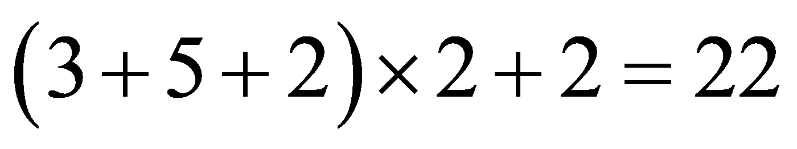
个平方单位，故答案为：5，22．
（2）解：该几何体从正面和左面看到的形状图如图所示：
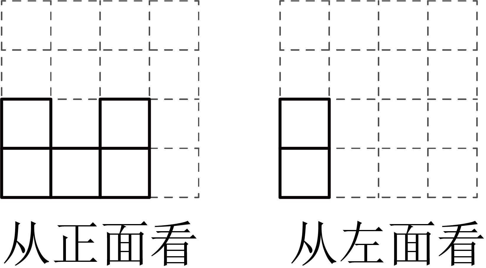
22．在平整的地面上，有一个由9个完全相同的小立方块搭成的几何体，每个小正方体的棱长均为 ，如图所示．
，如图所示．
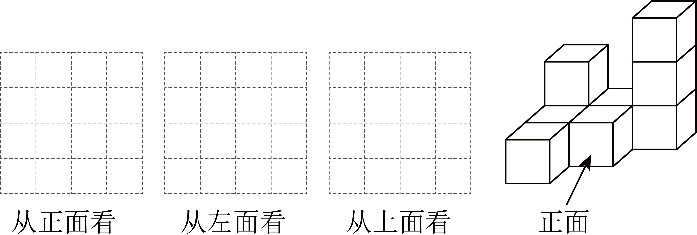
(1)请画出这个几何体从三个方向看到的形状图；
(2)将原几何体露出的表面部分涂成红色，那么红色部分的面积 ___________ ．
【答案】(1)图见解析
(2)
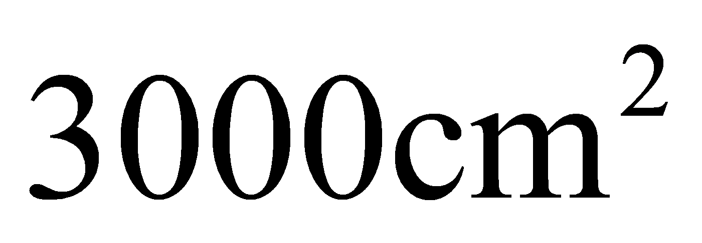
【分析】本题考查从不同方向看几何体，正确的画出从三个方向看到的图形，是解题的关键：
（1）分别画出从前往后，从左往右，从上往下看到的图形即可；
（2）结合画出的三个图形，用前后面，左右面，上面以及一个凹面中的小正方形的个数乘以小正方形的面积即可．
【详解】（1）解：画出图形如下：
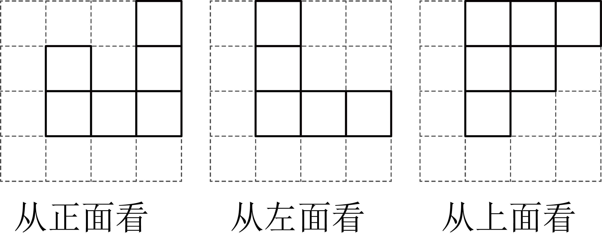
（2）
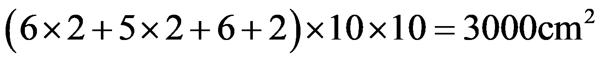
；故答案为：．
23．如图是由11个大小相同的正方体搭成的几何体．


(1)请在网格中画出从正面看、从左面看和从上面看形状图；
(2)想不改变从三个方向看的形状图，在几何体上最多可以添加___________个相同的正方体．
【答案】(1)见解析；
(2)1．
【分析】本题主要考查从不同方向看几何体，分别是从正面、左面和上面看，所得到的图形，
（1）根据从不同方向看几何体画出图形即可．
（2）根据题目条件解决问题即可．
【详解】（1）如图所示：
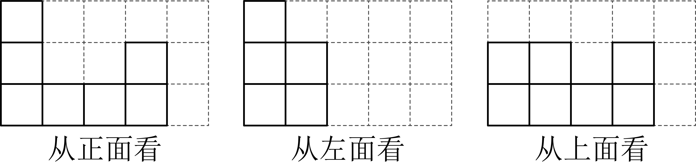
（2）如图所示：
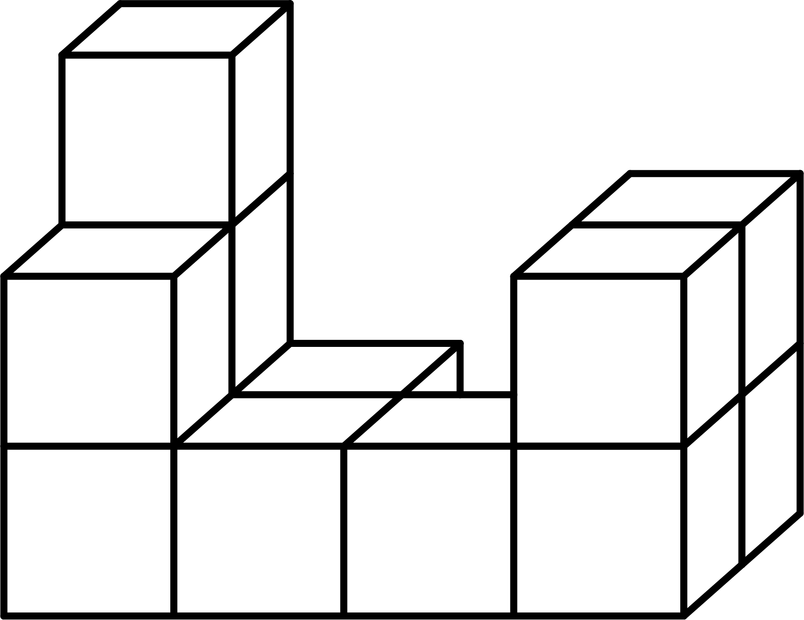
想不改变从三个方向看的形状图，在几何体上最多可以添加1个相同的正方体．
故答案为：1．
24．如图所示的几何体是由若干个相同的小正方体组成的．

(1)填空：这个几何体是由______个小正方体组成的；
(2)画出从左面、上面观察这个几何体所看到的形状图；
(3)在不改变此几何体从左面、上面观察到的形状图的情况下，最多还可以添加多少个小正方体？
【答案】(1)9
(2)见解析
(3)最多还可以添加7个小正方体
【分析】本题主要考查了从不同位置看简单几何体，考查了学生空间想象能力．
（1）根据图形进行分析即可得到答案；
（2）从左面看有2列，每列小正方形数目分别是3，2；从上面有4列，每列小正方形数目分别是1，2，1，2；据此可画出图形；
（3）保持从左面、上面看到图形不变，可以在后一行最左边加上2个，右边同行上可加 个，前一行可加1个，相加求出即可．
个，前一行可加1个，相加求出即可．
【详解】（1）解：由图可得，这个几何体由9个小正方体组成．
（2）解：从左面、上面观察这个几何体所看到的形状图如图所示：
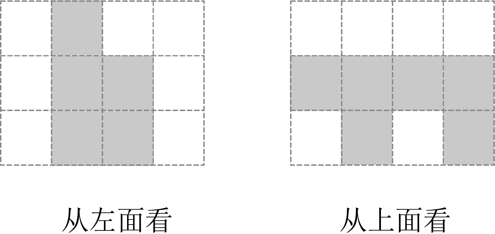
（3）解：根据题意得，保持此几何体从左面、上面观察到的形状图不变的情况下，可以在后一行最左边加上2个，右边同行上可加个，前一行可加1个，故最多还可以添加7个小正方体．
25．小林所在的综合实践小组准备制作一些大小相同的正方体纸盒，用来收纳班级讲台上的粉笔（盒盖单独制作）．

(1)图1是综合实践小组的同学画出的一些形状图，其中______（填序号）经过折叠能围成一个无盖正方体形纸盒．
(2)综合实践小组的同学用制作的8个正方体形纸盒摆成如图2所示的几何体．
①在图3中画出从正面观察图2的几何体所看到的形状图；
②如果在图2的几何体上再添加一些大小相同的正方体形纸盒，并保持从上面看到的形状图和从左面看到的形状图不变，最多可以再添加______个正方体形纸盒．
【答案】(1)①③④
(2)①图见解析；②3
【分析】本题考查简单组合体，展开图折叠成几何体等知识．
（1）根据要求动手操作可得结论；
（2）①根据主视图的定义画出图形即可；
②根据要求作出判断即可．
【详解】（1）解：图1是综合实践小组同学制作的图形，其中①③④经过折叠能围成无盖正方体纸盒；
故答案为：①③④；
（2）解：①如图所示：
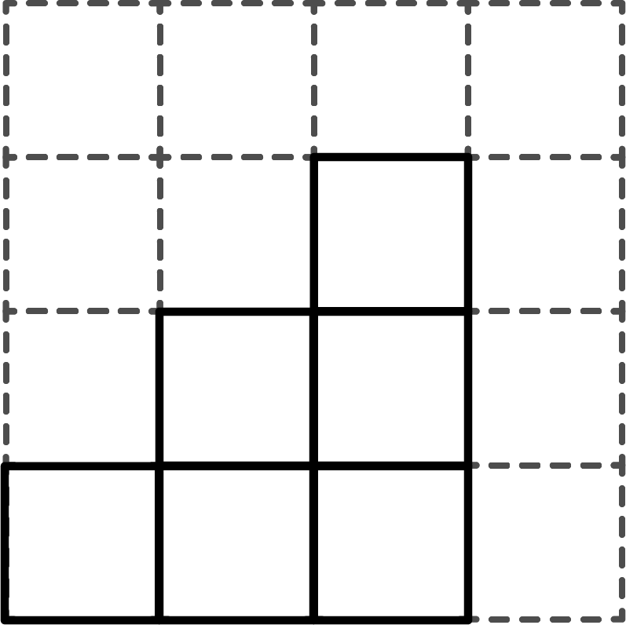
②如果在图2的几何体上再添加一些大小相同的正方体形纸盒，并保持从上面看到的形状图和从左面看到的形状图不变，最多可以再添加3个正方体形纸盒．
故答案为：3．
题型六：由展开图求几何体的表面积和体积
26．某几何体的展开图如图所示．

(1)该几何体是 ；(填名称)
(2)求这个几何体的体积．
【答案】(1)长方体
(2)
【分析】（1）根据长方体有6个面，相对两个面的形状大小完全相同可知该几何体为长方体．
（2）由该长方体的平面展开图可知宽为 ，高为
，高为 ，长为
，长为
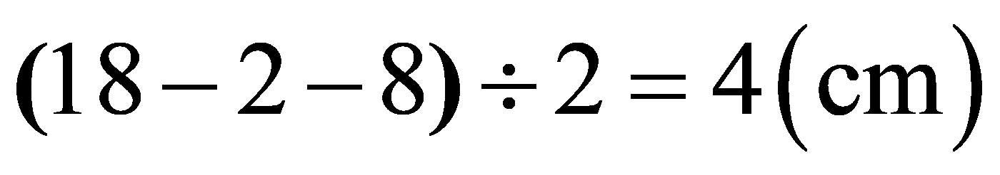
，根据才给他体积公式即可可求得该长方体的体积．本题主要考查了长方体的平面展开图，熟练掌握长方体的特征是解题的关键．
【详解】（1）解：该几何体是长方体.
故答案为：长方体
（2）解：该长方体的宽是，高是，长是，
所以这个几何体的体积是 .
.
27．如图，小华用若干个正方形和长方形准备拼成一个长方体的展开图．拼完后，小华看来看去总觉得所拼图形似乎存在问题．

(1)请你帮小华分析一下拼图是否存在问题：若有多余块，则把图中多余部分涂黑；若还缺少，则直接在原图中补全；
(2)修正后所折叠而成的长方体中，写出所有与点A重合的点： ；
(3)若图中的正方形边长为，长方形的长为 ，宽为，请直接写出修正后所折叠而成的长方体的体积：
，宽为，请直接写出修正后所折叠而成的长方体的体积： 
【答案】(1)见解析
(2)F、N
(3)12
【分析】本题考查了平面图形的折叠与长方体的展开图及其体积的计算．
（1）根据长方体展开图判断；
（2）将展开图折叠成长方体，看与A重合的点即可；
（3）由题意可知，此长方体的长、宽、高可分别看作、和，将数据代入长方体的体积公式即可求解．
【详解】（1）解：拼图存在问题，多了，如图：
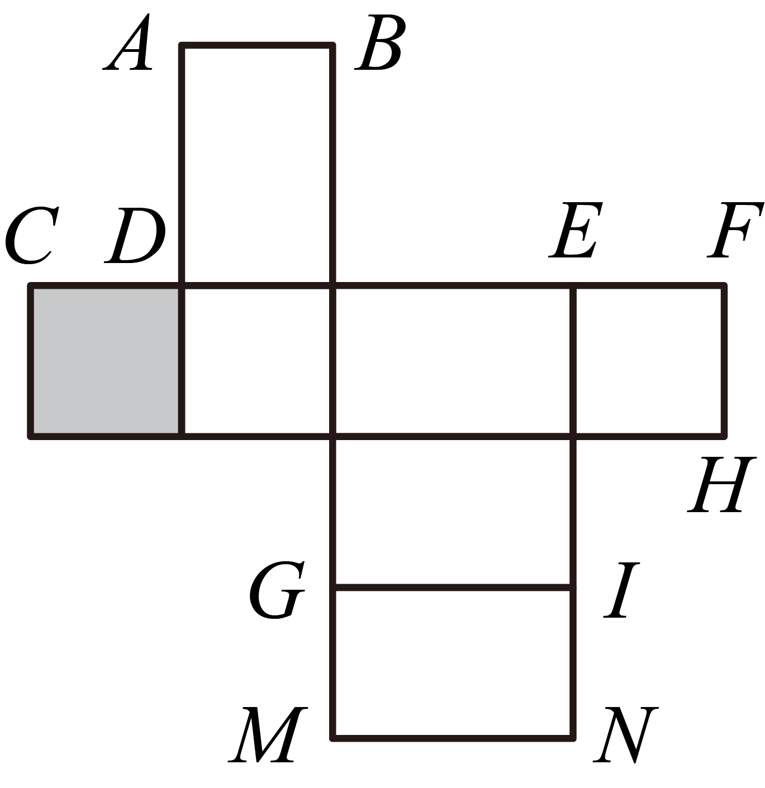
（2）解：修正后所折叠而成的长方体中，所有与点A重合的点：F、N；
故答案为：F、N；
（3）解：由题意得，围成的长方体长，宽，高分别为、、 ，
∴体积为：
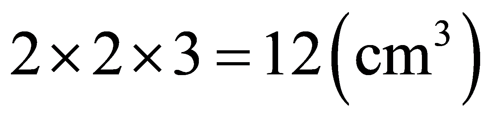
．故答案为：12．
28．小明在数学活动课中制作了一个长方体包装纸盒（图1），图2是该包装盒平面展开图（粘贴部分忽略不计），相关数据如图2所示，经过测量得出该包装纸盒的长比宽多 ．
．

(1)设长方体的宽为 ，则长为______
，则长为______ ，高为______（都用含
，高为______（都用含 的代数式表示）；
的代数式表示）；
(2)求长方体包装盒的体积．
【答案】(1) ，，
，，
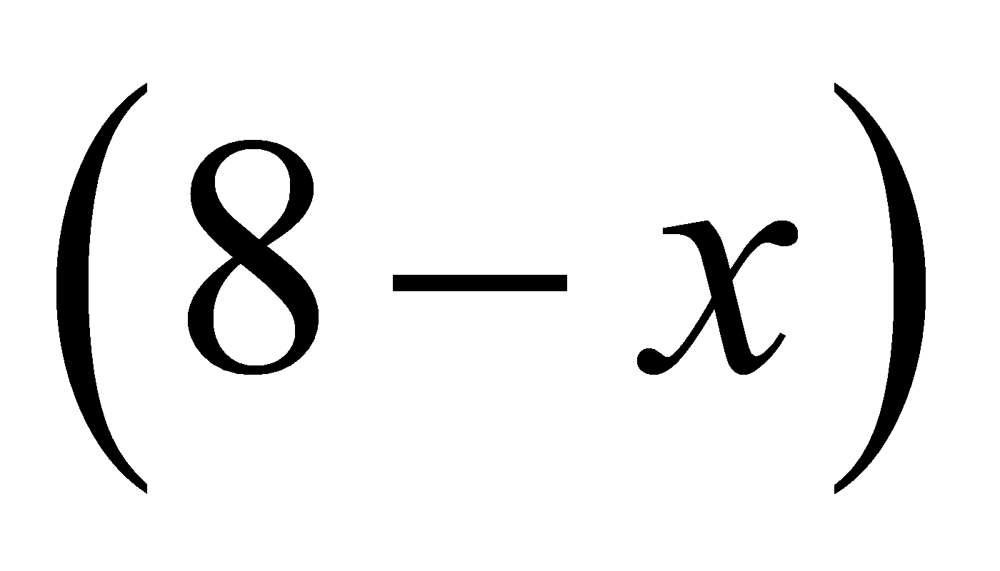
或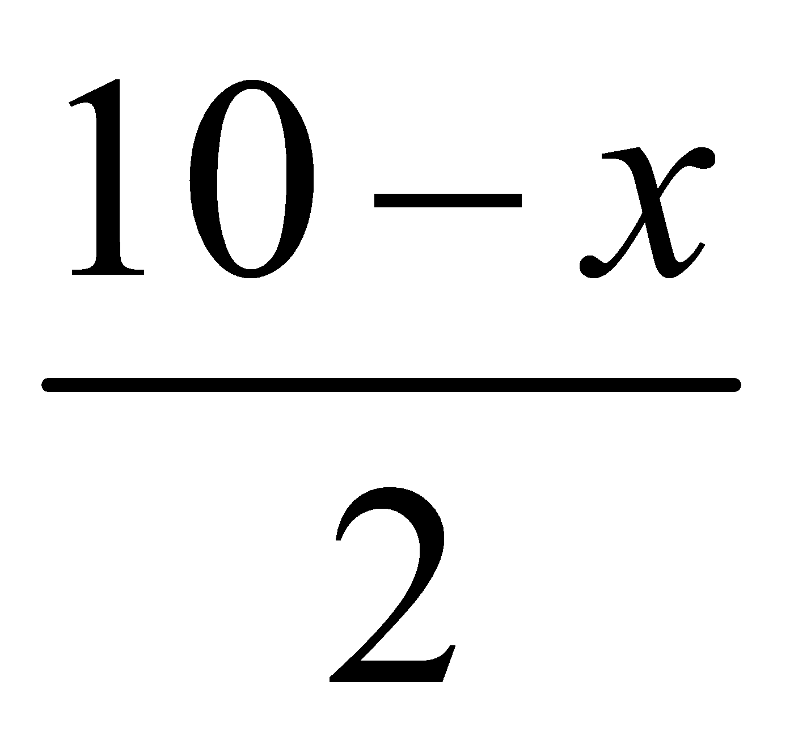
(2)长方体包装盒得体积是
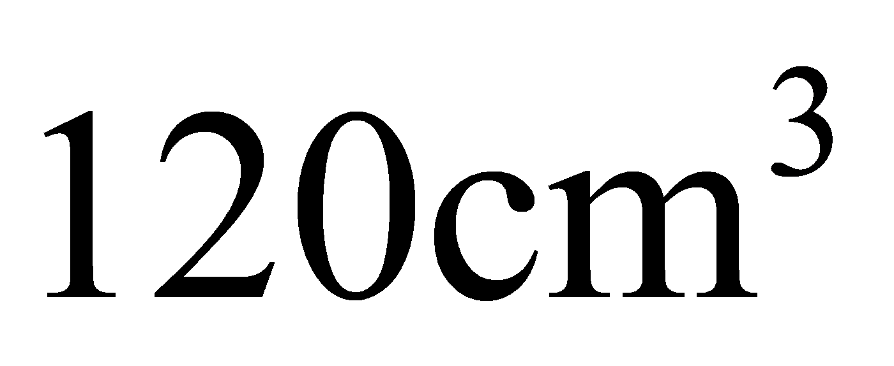
【分析】（1）设长方体的宽为，由长比宽多，得到长为，用总长为 时，则高为
时，则高为
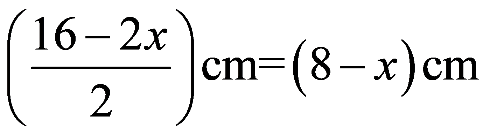
，用总长为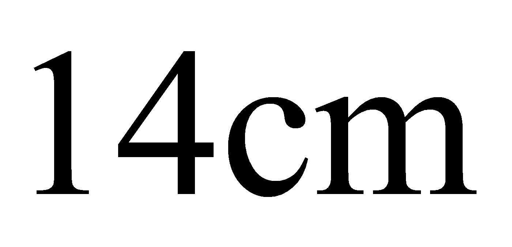
时，则高为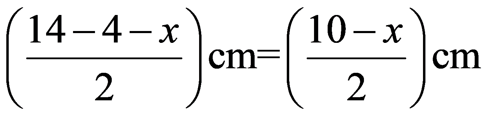
，解答即可．（2）根据题意，得
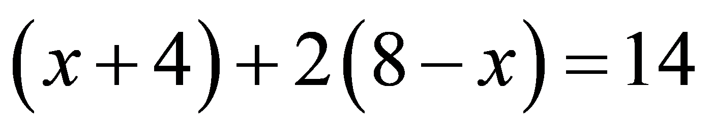
，解得 ，后根据体积公式解答即可．
，后根据体积公式解答即可．本题考查了长方体的展开图，体积计算，熟练掌握展开图是解题的关键．
【详解】（1）解：设长方体的宽为，由长比宽多，则长为，
用总长为时，则高为，
用总长为时，则高为，
故答案为：，，或．
（2）解：根据题意，得
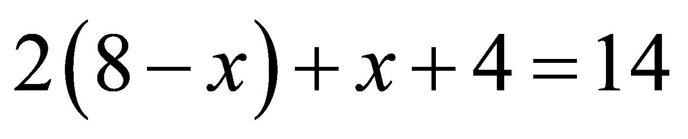
，解得
长：，高：．
答：长方体包装盒得体积是．
29．如图是某几何体从三个不同方向看到的形状图．
(1)这个几何体的名称是 ；
(2)若从正面看到的图形的宽为4 ，长为6，从上面看到的图形是直角三角形，其中斜边长为5，求这个几何体的表面积．
，长为6，从上面看到的图形是直角三角形，其中斜边长为5，求这个几何体的表面积．
【答案】(1)直三棱柱；
(2)
【分析】此题主要考查了从三个不同方向看几何体的形状并求表面积.
（1）直接根据图像可得出几何体的形状；
（2）利用已知各棱长分别得出表面积和体积．
【详解】（1）这个几何体是直三棱柱；
故答案为：直三棱柱；
（2）如图，
∵从正面看到的图形的宽为4，斜边长为5，
∴
由题意可得：它的表面积为：．
30．综合与实践
【问题情境】在一次数学实践活动课上，同学们利用一张边长为 的正方形纸板开展了“长方体纸盒的制作”实践活动
的正方形纸板开展了“长方体纸盒的制作”实践活动
（1）图1中，是无盖正方体的表面展开图的是______．（填序号）
【操作探究】如图2，勤学小组的同学先在纸板四角剪去四个同样大小边长为 的小正方形，再沿虚线折合起来，制成了一个无盖的长方体纸盒．
的小正方形，再沿虚线折合起来，制成了一个无盖的长方体纸盒．
如图3，善思小组的同学先在纸板四角剪去两个同样大小边长为的小正方形和两个同样大小的小长方形，再沿虚线折合起来，制成了一个有盖的长方体纸盒．
【计算分析】
（2）①图2中的长方体纸盒的底面周长为______；
②图3中的长方体纸盒的体积为______；
【问题解决】
（3）请你利用边长为的正方形纸板制作一个长方体纸盒（无盖，有盖均可），仿照图2，图3的绘图方式，画出2种不同的裁剪设计图．
【答案】（1）①；（2）①40；②294；（3）见解析
【分析】本题考查展开图折叠成几何体，掌握棱柱展开图的特征是正确解答的关键．
（1）根据正方体表面展开图的特征进行判断即可；
（2）①根据裁剪方法得出底面是边长为的正方形即可；②得出长方体的长、宽、高，再根据长方体的体积的计算方法进行计算即可；
（3）根据棱柱的展开与折叠的方法进行解答即可．
【详解】解：（1）根据正方体表面展开图的“田凹应弃之”可得，是无盖正方体的表面展开图的是①，
故答案为：①；
（2）①图1中的正方体的底面是边长为 的正方形，因此底面周长为，
的正方形，因此底面周长为，
故答案为：40；
②由折叠可知，图2中长方体纸盒的长为 ，宽为
，宽为 ，高为，
，高为，
所以体积为，
故答案为：294；
（3）利用边长为的正方形纸板，利用按照图3、图4的裁剪方法可制作一个有盖的长方体纸盒．
题型七：平面图形旋转后所得的立体图形并求体积
31．如图，将长方形绕其长边所在直线旋转一周，得到一个立体图形．
(1)这个立体图形是______．
(2)求这个立体图形的侧面积．（结果保留 ）
）
【答案】(1)圆柱
(2)这个图形的侧面积是．
【分析】本题主要考查了面动成体，解答此题的关键是找出旋转所得到的图形与原图形之间的数据关系．
（1）根据面动成体可知将正方形围绕它的一条边为轴旋转一周，得到的是圆柱；
（2）根据圆柱的高和底面周长，进行计算即可．
【详解】（1）解：将长方形围绕它的一条边为轴旋转一周，得到的是圆柱，
故答案为：圆柱；
（2）解：这个立体图形的侧面积为 ；
；
答：这个图形的侧面积是．
32．当同一个平面图形绕不同的轴旋转时，得到的立体图形一般不同．

(1)如图1是一张长方形纸片， 长为
长为 ，
， 长为
长为 ．若将这个长方形纸片绕它的对边中点所在直线旋转一周，求形成的几何体的表面积．（结果保留π）
．若将这个长方形纸片绕它的对边中点所在直线旋转一周，求形成的几何体的表面积．（结果保留π）
(2)已知一个直角三角形，它的各边长如图2所示．当三角形绕着图中所示的虚线旋转一周时，得到的是一个几何体，你能求出这个几何体的体积吗？（结果保留π）
【答案】(1)或
(2)
【分析】本题考查点、线、面、体以及几何体的表面积，理解“面动成体”是正确解答的前提，掌握圆柱体、圆锥体体积的计算方法是正确解答的关键．
（1）分绕 和两边中点所在直线旋转一周和绕和
和两边中点所在直线旋转一周和绕和 两边中点所在直线旋转一周两种情况解答即可；
两边中点所在直线旋转一周两种情况解答即可；
（2）根据“面动成体”得出所得到的几何体的特征，再根据圆柱体、圆锥体积的计算方法进行计算即可．
【详解】（1）解：当绕和两边中点所在直线旋转一周时，形成的几何体的表面积为： ；
；
当绕和两边中点所在直线旋转一周时，形成的几何体的表面积为： ；
；
故形成的几何体的表面积为 或
或 ；
；
（2）解：三角形绕着图中所示的虚线旋转一周时，得到的是一个圆柱挖去一个圆锥后剩余的几何体，其中圆柱和圆锥的底面半径均为，高均为，
得到的几何体的体积 ．
．
33．小军和小红分别以直角梯形的上底和下底所在的直线为轴，将梯形旋转一周，得到了两个立体图形．
小军：我们旋转的平面图形是完全一样的，所以旋转后得到的两个立体图形的体积相等．
小红：我不同意你的看法，我认为甲、乙两个立体图形的体积不相等．
(1)你同意____________的说法．
(2)甲、乙两个立体图形的体积比是多少？
【答案】(1)小红
(2)
【分析】本题主要考查了圆柱和圆锥的体积计算，面动成体，
（1）根据圆柱和圆锥的体积计算公式分别计算出甲、乙两个立体图形的体积即可得到答案．
（2）根据（1）直接求解即可．
【详解】（1）解：甲的体积为 ，
，
乙的体积为 ，
，
∴甲、乙两个立体图形的体积不相等，
∴同意小红的说法．
故答案为：小红
（2）解：，
答：甲、乙两个立体图形的体积比是．
34．如图，这是一张长方形纸片，的长为， 的长为
的长为 ．
．

(1)若将此长方形纸片绕它的一边所在的直线旋转一周，则形成的几何体是________．
(2)若将这个长方形纸片绕边所在的直线旋转一周，求形成的几何体的体积（结果保留）
【答案】(1)圆柱
(2)
【分析】本题考查了点、线、面、体，熟练掌握圆柱的特征，以及圆柱的体积计算公式是解题的关键．
（1）根据面动成体的原理，将此长方形纸片绕它的一边所在直线旋转一周，则形成的几何体是圆柱；据此即可求解．
（2）根据题意可得，圆柱的底面半径为，高为，再根据圆柱的体积公式进行计算即可解答．
【详解】（1）解：将此长方形纸片绕它的一边所在的直线旋转一周，则形成的几何体是圆柱；
（2）解：由题意，得，
所以形成的几何体的体积．
35．如图，将平面图形甲、乙分别绕轴 旋转一周，可以得到立体图形
旋转一周，可以得到立体图形 ，图形甲是直角边分别为
，图形甲是直角边分别为 的直角三角形，图形乙是长为
的直角三角形，图形乙是长为 、宽为
、宽为 的长方形．
的长方形．
(1)立体图形 的名称是______；（答案直接填写在答题卡的横线上）
的名称是______；（答案直接填写在答题卡的横线上）
(2)请问立体图形比立体图形 的体积大多少？（用含和
的体积大多少？（用含和 的式子表示，
的式子表示， ，）
，）
【答案】(1)圆柱；
(2) ．
．
【分析】本题考查了面动成体，圆锥的体积、圆柱的体积等知识点，掌握知识点的应用解题的关键．
（ ）根据面动成体即可解答；
）根据面动成体即可解答；
（）设图形的体积分别为、 ，然后分别求得图形的体积，然后作差即可解答．
，然后分别求得图形的体积，然后作差即可解答．
【详解】（1）解：以长方形的边所在直线为旋转轴得到的立体图形为圆柱，
故答案为：圆柱；
（2）解：设图形的体积分别为、，
则 ，
，
，
∴，
即立体图形比立体图形的体积大．